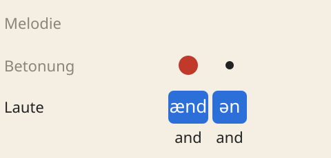

Kleine Wörter sind leise
Mit einem KI-Tutor lernen
Ein KI-Tutor erklärt dir diese Seite und hilft dir bei den Aufgaben. Wähl deinen Assistenten:
Mit Claude öffnen Mit ChatGPT öffnen Mit Mistral Vibe öffnen
Du nutzt dein eigenes Konto beim Anbieter. Der Assistent ist kein Angebot von lernapps.net: lernapps liefert nur Inhalte und Aufgaben. Die Wahl gilt für alle Seiten, nur auf diesem Gerät.
Sophie liest ein Rezept
Sophie liest beim Backen ein Rezept vor. Du kennst die Betonung im Wort. Jetzt geht es um die kleinen Wörter im Satz.
Aufgabe
Lösung
Ein kurzes, dumpfes e, wie in „Hase“ und „Tasse“ richtige Antwort
Dieser Laut heißt Schwa und kommt im Deutschen oft am Wortende vor.
Ein langes e, wie in „See“
Das e in „Hase“ ist kurz und leise.
Ein a
Am Ende von „Hase“ steht ein e, das man als dumpfen Laut spricht.
Am Ende von „Hase“ hört man ein Schwa. Im Englischen ist dieser Laut sehr häufig.
Das kannst du danach: Du erkennst, welche Wörter im Satz schwach klingen, und sprichst sie mit dem Schwa.
In der Küche
| Englisch | Deutsch |
|---|---|
| recipe | das Rezept |
| flour | das Mehl |
| weak | schwach |
| butter | die Butter |
| really short | ganz kurz |
Mrs Parker: Sophie, can you read the recipe for me? My hands are full of flour.
Sophie: ok. "Mix the flour and the eggs. Add a bit of sugar for the cake."
Ellie: haha, Sophie! you say every little word so clearly.
Sophie: isn't that right?
Ellie: no. we say and, of, the and for really short. nobody says every word with full power.
Mrs Parker: that's true. the small words are weak. they get a short sound, the schwa. but at the end of a sentence a small word can be strong again.
Peter: like in "What is it for?"
Mrs Parker: exactly, Peter. here the word for is strong.
Aufgabe
Lösung
Man spricht sie ganz kurz und leise. richtige Antwort
Ellie sagt, dass man sie really short spricht.
Man lässt sie beim Sprechen weg.
Man spricht sie, aber nur schwach.
Man spricht sie besonders laut.
Das Gegenteil stimmt, sie sind leise.
Ellie sagt, dass kleine Wörter kurz und leise klingen.
Aufgabe
Lösung
Mrs Parker: that's true. the small words are weak. they get a short sound, the schwa. but at the end of a sentence a small word can be strong again. richtige Antwort
Mrs Parker nennt das Satzende als Stelle für die starke Form.
Sophie: isn't that right?
Sophie fragt hier nur, ob sie richtig liegt.
Ellie: haha, Sophie! you say every little word so clearly.
Ellie lacht hier über Sophies Aussprache.
Mrs Parker sagt, dass kleine Wörter am Satzende wieder stark klingen können.
Stark und schwach
Kleine Wörter wie and, to, of, for und the sind im Satz meist unbetont. Sie klingen dann mit dem kurzen Laut Schwa /ə/ oder ganz kurz. Das ist ihre schwache Form. Steht das Wort allein, am Satzende oder wird es betont, sagt man die starke Form. Geschrieben wird immer gleich. Auch andere kleine Wörter wie from, at, was und them haben schwache Formen: Bei allen wird der Vokal zum Schwa.

and: stark /ænd/, schwach /ən/.
Quelle: eigene Zeichnung. Lizenz: CC-BY-4.0.| Wort | Stark | Schwach |
|---|---|---|
| and | /ænd/ | /ən/ |
| to | /tuː/ | /tə/ |
| of | /ɒv/ | /əv/ |
| for | /fɔː/ | /fə/ |
| can | /kæn/ | /kən/ |
Merke
- Im Satz: Kleine Wörter sind meist unbetont und klingen schwach, mit /ə/.
- Stark klingen sie allein, am Satzende oder wenn man sie betont.
- Das Schwa /ə/ ist der häufigste Laut im Englischen. Man spricht ihn kurz und leise.
- Geschrieben wird immer das volle Wort.
Übung
Aufgabe
Lösung
Schwach, /tə/ richtige Antwort
To ist hier unbetont und klingt kurz und leise.
Stark, /tuː/
Die starke Form hört man nur allein, am Satzende oder bei Betonung.
Man hört es gar nicht.
Man hört es, aber nur ganz kurz.
Im Satz klingt to schwach als /tə/.
Aufgabe
Lösung
can in „Yes, she can.“ richtige Antwort
Am Satzende klingt can stark, /kæn/.
from in „Where are you from?“ richtige Antwort
Am Satzende klingt from stark, /frɒm/.
can in „She can swim well.“
Mitten im Satz ist can unbetont und klingt schwach, /kən/.
of in „a cup of tea“
Mitten im Satz ist of unbetont und klingt schwach, /əv/.
Am Satzende klingen kleine Wörter stark, mitten im Satz schwach.
Aufgabe
Lösung
Richtige Antwort: from – /frəm/; at – /ət/; was – /wəz/; them – /ðəm/
In allen vier Wörtern wird der Vokal zu einem Schwa.
Aufgabe
Höre zu und schreibe den Satz ganz auf.
Tipp
Höre den Satz so oft, wie du willst.
- KI
Lösung
- Bread and butter for Peter and Amir.
Deine Sätze
Offene Aufgabe
Schreibe vier englische Sätze über ein Rezept oder ein Essen, das du magst. Verwende in jedem Satz mindestens eines der Wörter and, to, of oder for. Schreibe danach auf Deutsch, bei welchem Wort du die schwache Form hörst und bei welchem die starke.
Tipp
Sprich jeden Satz leise vor und achte auf die kleinen Wörter.
Eine gute Antwort enthält:
Lösung
I like pasta and cheese. We go to the shop on Saturday. I buy a bag of rice. What is the sauce for? Mitten im Satz klingt and schwach, bei for am Satzende hört man die starke Form.
Wie es weitergeht
Auf der nächsten Seite hörst du, wie aus betonten und unbetonten Wörtern ein Satz mit Rhythmus wird.
Fehler gefunden oder eine Idee für diese App?